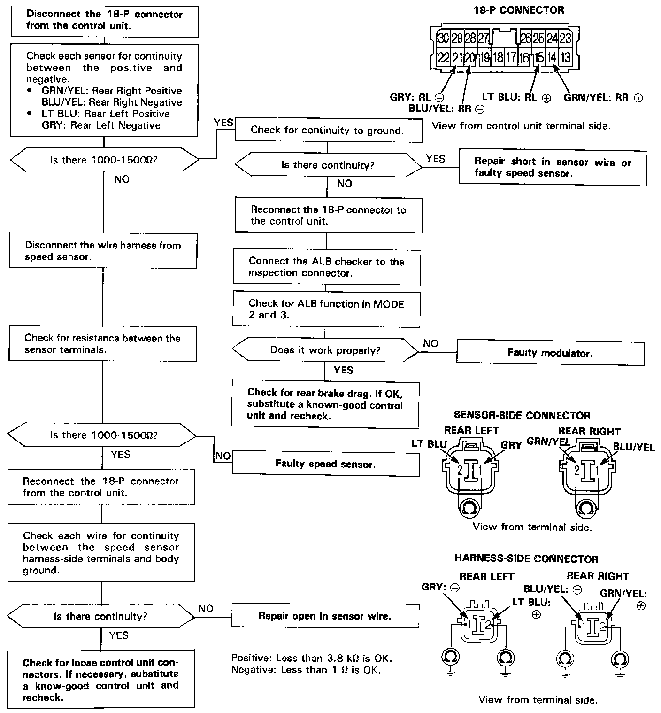

DTC 5-8

Problem Code 5 to 5-8: Speed Sensor(s)
CAUTION: Use only the digital multimeter to check the system.
NOTE: If a malfunction is detected, this code appears and the fail-safe function is activated. The indicator light comes ON after restarting the engine until the malfunction code is erased (by disconnecting the ALB 2 fuse for 3 seconds).